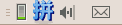
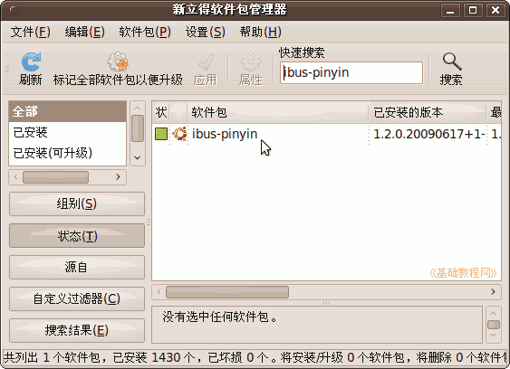
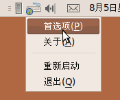
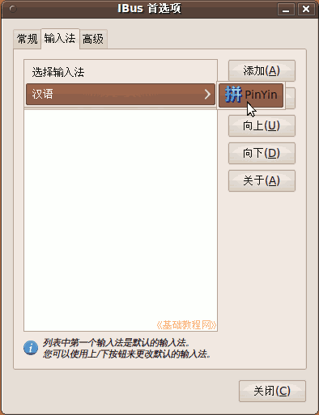
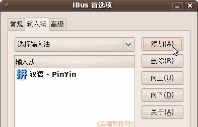
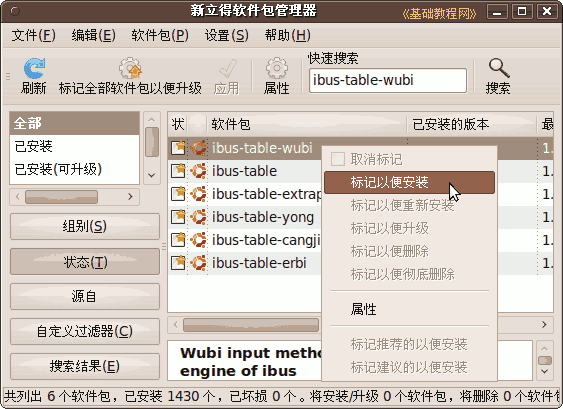
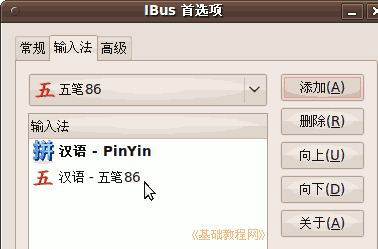
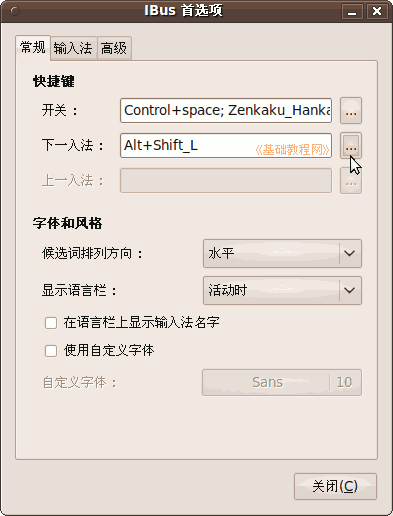
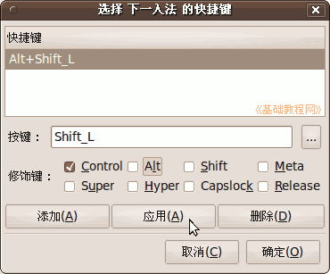
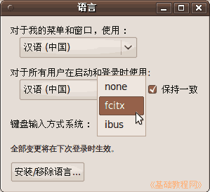

Ubuntu/GNOME 桌面程序指南
作者：TeliuTe 来源：基础教程网
七、ibus 输入法 返回目录 下一课输入法图标在右上角，一个小键盘，常用的输入法有 scim、fcitx、ibus 等，可以用拼音也可以用五笔输入；
1、ibus 输入法
1）安装好以后系统，更新完中文包就会有一个“汉语-PinYin”输入法，图标是一个大大的“拼”，其他的不是；

2）如果没有的话，可以到 “系统 - 系统管理 - 新立得软件包” 中搜索 ibus-pinyin 安装；

3）安装好以后，在右上角的小键盘图标上点右键，选“首选项”命令；

4）在出来的面板中，点上面的“输入法”标签，再点“添加输入法 - 汉语 - 拼PinYin”，选好以后点右边的“添加”按钮；

5）在列表里就会出来这个拼音输入法，其他不用的也可以删除掉；

2、安装五笔
1）安装方法相同，的新立得中“搜索 - 标记 - 应用” ibus-table-wubi

2）安装完以后，在小键盘图标上点右键，选“重新启动”，再到首选项里添加上，就可以使用了；

3）Ctrl+空格键是中英文切换，左Alt+Shift 键是输入法切换，可以在 “首选项 - 常规” 里点右边三个小点设置；

4）默认候选词是竖窗口，要想改成横排，可以在 “首选项 - 常规 - 字体风格” 中选择水平；

5）要删除 ibus 输入法，在新立得中搜索标记 ibus 然后应用，注销后再重新登录就是别的输入法，
如果只是想切换别的输入法程序，点菜单“系统 - 系统管理 - 语言支持”，选一个别的输入法即可；

本节学习了 ibus 输入法的基础知识，如果你成功地完成了练习，请继续学习下一课内容；
本教程由86团学校TeliuTe制作|著作权所有
基础教程网：http://teliute.org/
美丽的校园……
转载和引用本站内容，请保留版权信息和本站链接。